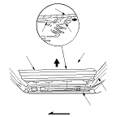
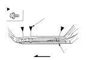
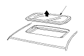

Sunroof Glass Replacement
Close the sunroof glass fully.
Slide the sunshade all the way back.
Remove both inner blinds (A).
-1.
Pull the top of the inner blind back from between the glass (B) and the glass support (C).
-2.
Turn the blind back. Starting at the rear, carefully pull out at each portion of the blind installed into slots in the drip link (D), then remove it.
-3.
Repeat on the opposite side.

With a T25 Torx bit, remove the bolts from both culisse (A).

Remove the glass (A) by lifting it up. Do not damage the roof panel.
Install the glass in the reverse order of the removal, and note these items:
Apply liquid thread lock to the glass mounting bolts before reinstallation.
Adjust the glass height alignment.
Check for water leaks. Use free-flowing water from a hose without a nozzle. Do not use high-pressure water.
